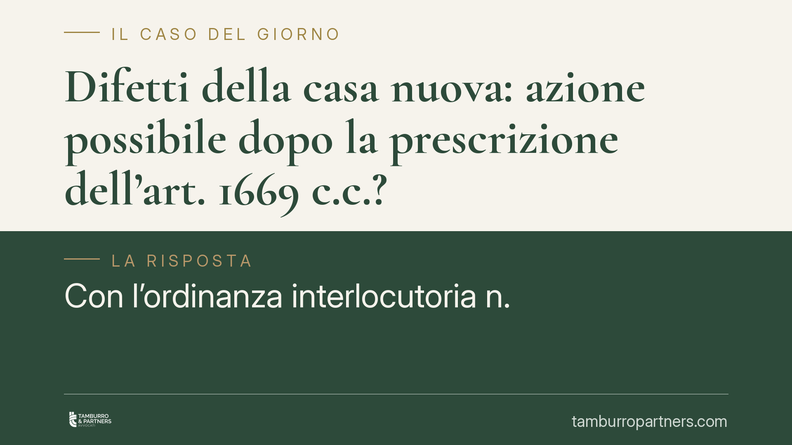

Difetti della casa nuova: azione possibile dopo la prescrizione dell'art. 1669 c.c.?
Con l'ordinanza interlocutoria n. 26951/2026 la Terza sezione della Cassazione rimette alla pubblica udienza una questione decisiva per chi acquista casa: quando scadono i termini dell'azione speciale per i gravi difetti dell'immobile, resta percorribile l'azione generale per fatto illecito? La risposta incide sulle tutele dell'acquirente contro impresa costruttrice e direttore dei lavori.

Il caso
La vicenda nasce da un contenzioso sui gravi difetti di un immobile, passato per il Tribunale di Teramo e la Corte d'appello dell'Aquila. L'acquirente lamentava vizi rilevanti della costruzione, ma i termini stringenti previsti per l'azione speciale erano ormai decorsi. Da qui la domanda che la Terza sezione della Cassazione ha ritenuto meritevole di discussione pubblica: una volta chiusa quella via, l'acquirente può ancora agire invocando la responsabilità generale per fatto illecito?
La sezione, con l'ordinanza interlocutoria n. 26951/2026, non decide. Rinvia la causa alla pubblica udienza, segnalando un possibile contrasto con un precedente delle Sezioni Unite del 2014. È un passaggio tecnico ma significativo: indica che la questione è aperta e che l'esito non è scontato.
Inquadramento normativo
L'art. 1669 c.c. disciplina la responsabilità del costruttore per i gravi difetti dell'opera destinata a lunga durata. È una tutela speciale: copre i casi di rovina, pericolo di rovina o gravi difetti che compromettono la funzionalità dell'edificio, ma è ancorata a termini rigorosi. Il difetto va denunciato entro un anno dalla scoperta e l'azione va esercitata entro un anno dalla denuncia; la garanzia opera per i difetti manifestatisi entro dieci anni dal compimento dell'opera.
L'art. 2043 c.c. è invece la norma generale sul risarcimento per fatto illecito: chiunque cagiona ad altri un danno ingiusto è tenuto a risarcirlo. Il suo termine di prescrizione è quello ordinario, più ampio di quelli previsti dall'art. 1669 c.c.
Il nodo è il rapporto tra le due norme. Se l'art. 1669 c.c. è considerato disciplina esclusiva dei gravi difetti edilizi, la sua scadenza chiude ogni possibilità di azione. Se invece si ammette che i medesimi fatti possano integrare anche un illecito aquiliano autonomo, l'acquirente conserverebbe una tutela residua. Le Sezioni Unite del 2014 avevano già affrontato la natura della responsabilità ex art. 1669 c.c.: proprio per questo la Terza sezione segnala il rischio di un contrasto.
Implicazioni pratiche
Per l'acquirente di un immobile nuovo, la posta in gioco è concreta. Oggi non esiste una certezza: chi ha lasciato decorrere i termini dell'art. 1669 c.c. non può dare per scontato di poter ripiegare sull'art. 2043 c.c. La Cassazione potrebbe consolidare la linea restrittiva, chiudendo quella via, oppure riconoscere un margine di tutela ulteriore.
Per l'impresa costruttrice e per il direttore dei lavori lo scenario è speculare. Finché la questione resta aperta, il rischio di esposizione risarcitoria oltre i termini speciali non può essere escluso, e questo pesa sulla valutazione delle controversie in corso e sulla gestione delle coperture assicurative.
In entrambi i casi, la prudenza impone di non attendere l'esito. I termini dell'art. 1669 c.c. restano stringenti e la loro osservanza è, allo stato, la tutela più solida. Affidarsi alla possibile apertura verso l'art. 2043 c.c. significa scommettere su un orientamento ancora da definire.
Cosa fare in concreto
- Documentate subito i difetti: alla comparsa di vizi strutturali o funzionali, raccogliete foto, relazioni tecniche e corrispondenza, con data certa.
- Rispettate i termini dell'art. 1669 c.c.: la denuncia va inviata entro un anno dalla scoperta e l'azione entro un anno dalla denuncia. Non confidate su rimedi alternativi.
- Valutate una perizia tecnica tempestiva: serve a qualificare la gravità del difetto e a collocarlo nel decennio di garanzia.
- Verificate la posizione di tutti i responsabili: impresa costruttrice e direttore dei lavori possono rispondere a titolo diverso; individuarli per tempo amplia le tutele.
- Chiedete una consulenza prima che i termini scadano: una valutazione preventiva consente di scegliere la strategia più adeguata al caso concreto.
In sintesi
L'ordinanza n. 26951/2026 non chiude la partita, ma la porta in pubblica udienza. Fino alla pronuncia, l'acquirente deve muoversi dentro i termini dell'art. 1669 c.c., senza affidarsi a una tutela ex art. 2043 c.c. che oggi non è garantita.
*Contributo informativo a cura di Tamburro & Partners - Avv. Giuseppe Tamburro. Non costituisce parere legale.*
Ogni contratto ha il suo equilibrio.
Se vuoi una revisione delle clausole o una redazione su misura, scrivi allo studio. Ti rispondiamo entro un giorno lavorativo.